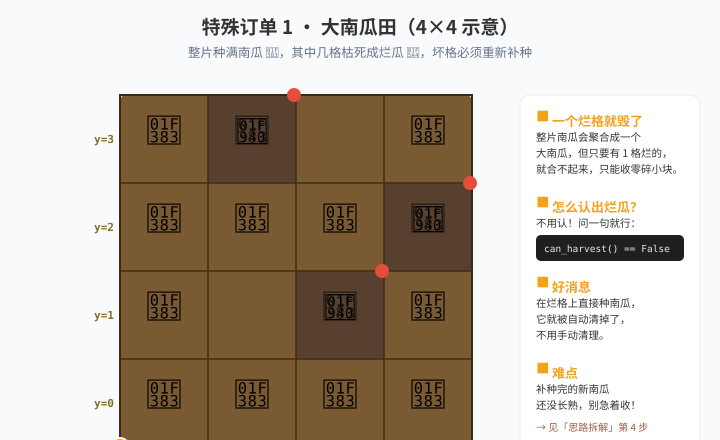
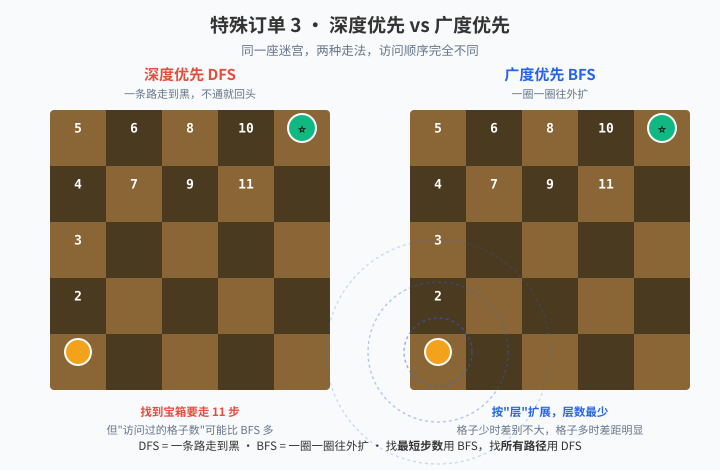

🎮 游戏进度 · 课前准备
📌 课前在游戏里做这些事
- 解锁 南瓜（Pumpkin）——种在翻好的土（
Grounds.Soil）上。 - 解锁 水（Items.Water）——浇水能让生长快约 5 倍，但挡不住枯死。
- 解锁 施肥（Items.Fertilizer）——对新苗施肥能缩短约 2 秒生长。
- 亲眼看一次枯死：种 9 颗南瓜等它们长大，会看到某个格子变成一个干瘪的南瓜——那就是烂格。
- 记住这条关键规则：在烂格上直接种东西，会自动清掉它，不用先清理。
- 学会用
can_harvest()判断一格能不能收——不用去认哪个是烂的，问一句就知道。 - 解锁 奇怪物质（Items.Weird_Substance）——用施肥让作物感染，收获时一半产量会变成这种物质。
- 在灌木上用它长出迷宫：
use_item(Items.Weird_Substance, n)，n = 田的边长。 - 在迷宫里试一下
measure()——它能在任何格子告诉你宝箱在哪（这是后面搜索算法的关键工具）。 - 解锁科技树里的 「导入」——它让你能把写好的函数拆到另一个代码文件里，再用
import 文件名搬进来。 - 试着多开一个代码窗口——在游戏里那就是一个独立的"文件"，是后面 import 的实验场。
为什么单独设栏目特殊订单不教新语法，只考"你会不会把学过的拼起来"。如果某个知识点忘了，先回对应的 S 阶段补上——别硬扛。
🎯 特殊订单 · 大南瓜
大南瓜：把烂瓜清干净再一起收
客户要你：把烂格一个不漏地找出来，重新种上，一直补到整片田全是好南瓜，然后一次性收走。

💡 思路拆解（先自己读一遍再看）
第 1 步 · 种满：用两层 for 扫全田，每格先 till() 再 plant(Entities.Pumpkin)。
第 2 步 · 记账：再扫一遍全田，每格问一句"收得了不"——can_harvest() 返回 False 的格子，就是要记账的坏格，把坐标 bad.append([x, y]) 记下来。
第 3 步 · 补种：for pos in bad: 逐个飞回去，在坏格上重新种南瓜（种上去就自动清掉烂南瓜）。
第 4 步 · 收：bad 列表空了，说明整片都是好南瓜，回到任意一格 harvest()。
关键点：can_harvest() 返回 False 有两种可能——烂了，或者还没长熟。所以扫描之前要先等全田长熟（浇水能加速），否则会把没熟的南瓜也当成坏格去补种，反而把好苗种坏。
🔧 常见报错 · 卡住了先看这里
收上来是一堆小块，不是大南瓜 → 收割太早了，还有南瓜没长熟或者还有烂格。先确认 bad 列表真的空了。
怎么判断"这格要补种" → can_harvest()。返回 True = 好了不用管；返回 False = 要记账。
坏格列表越来越长 / 越补越乱 → 你把还没长熟的南瓜也当成烂瓜了。先等全田长熟再扫，别急着补种。
在烂格上 plant 报错 → 检查是否先 till() 翻土。烂格也要翻土才能种。
补种完还是收不到大南瓜 → 补种的新南瓜还没长熟。补种后要等，或者循环到全部 can_harvest() 为 True。
收完发现地上还有南瓜 → 收割会拆掉合并。整片要同时收，中途不要收别的。
📌 老师注记这道题是列表综合实战：S3 的列表 + S3 的 for 遍历 + S2 的 if 判断 + L1 的双层 for，四样东西一起用。
大南瓜产量是 n³（边长 1–5），6×6 起是 6·n²——32×32 的田能收 6144 个。学生看到那个数字时会自己理解"为什么要优化"，不用讲。
🎯 特殊订单 · 走位与搜索
goto(x, y)：自己造一个"走到指定位置"
move()。客户要你自己写一个
goto(x, y)：不管无人机现在在哪，都能把它准确地开到指定格子。写好之后，整个农场脚本都能用上它——这叫函数。
💡 思路拆解（先自己读一遍再看）
为什么要分两步？如果写成"先看 x 还差几格就走几格，再看 y 还差几格就走几格"这种混着走的逻辑，很容易走出田的边界。先横着走到目标列（此时 y 不变），再竖着走到目标行——每一步都 guaranteed 在田里。
函数的三要素：
① 参数 x, y——"要去哪"，调用时才决定；
② 返回值——走到就到了，可以 return True；走不到（被墙挡住）就 return False；
③ 调用——goto(2, 3) 就是"用这个能力"。
关于 import：在真实 Python 里，你想用别人写好的功能会写 import math——把工具箱搬进来。
这个游戏里也有 import：科技树里有一个「导入」节点（解锁要 80 根胡萝卜），游戏内文档给的写法是：
import other_file 然后 other_file.function()。
也就是：只能 import 自己的代码文件（游戏里另开的代码窗口就是"文件"），不能 import 标准库。
所以本题的正确姿势是：把 goto 单独写在一个文件里，主文件 import 它，再通过"文件名.函数名"调用。
这就是"函数"的意义：写一次，用无数次；这就是 import 的意义：写好的工具还能拆成独立文件，重复利用。
# 文件 A（另一个代码窗口，文件名就叫 tools）
def goto(x, y):
while get_pos_x() != x:
move(East) if get_pos_x() < x else move(West)
while get_pos_y() != y:
move(North) if get_pos_y() < y else move(South)
# 文件 B（主程序）
import tools # 把工具箱搬进来
tools.goto(2, 3) # 用工具：文件名.函数名()🔧 常见报错 · 卡住了先看这里
一直转圈停不下来 → while 的条件写错了。判断条件要同时看两个坐标：while get_pos_x() != x or get_pos_y() != y:（用 or，不用 and——只要还有一个没到就得继续走）。
走到一半卡住不动 → 田里有墙或障碍，move() 失败了但循环还在转。让 move() 的返回值参与判断，走不动就退出。
走过头了 → 移动前先比较大小，别无脑往一个方向冲。if get_pos_x() < x: move(East) else: move(West)。
写 import 报错 → 还没解锁「导入」这个科技。去科技树里找到它（要 80 根胡萝卜），解锁后再写。
import 报"找不到文件" → 文件名对不上。import tools 里的 tools 要和另一个代码窗口里保存的文件名完全一致（不写 .py 后缀）。
调用时报"没有这个属性" → 记成 goto(2, 3) 了。import 进来之后要写成 tools.goto(2, 3)——带上文件名。
import 了但还是报错 → 游戏里 import 的规则和真实 Python 不完全一样：只能导入自己开的代码文件，不能 import 任何标准库（import math 是无效的）。
更快的迷宫：深度优先 vs 广度优先
- 深度优先 DFS：一条路走到黑，撞墙才回头换一条。
- 广度优先 BFS：一圈一圈往外扩，先找到的一定是最短的。
measure() 在迷宫任何位置都能返回宝箱坐标——这就是"目标在哪"的信息来源。

💡 思路拆解（先自己读一遍再看）
核心概念 · "访问过"标记：两种算法都必须记住哪些格子已经看过了，不然会在死胡同里来回转。
用字典记（S4 学过）：visited[(x, y)] = True。
DFS · 深度优先：用栈（或者干脆递归）。规则是"走到最深处，撞墙就退回来换一条路"。
特点：可能先走很远才发现没路；不适合求最短路。
BFS · 广度优先：用队列（先进先出）。规则是"一圈一圈往外扩，先把离起点近的都看一遍"。
特点：第一次碰到宝箱时，走的步数就是最少的。
为什么 BFS 求最短路？因为它按步数分层：第 0 层是起点，第 1 层是走一步能到的地方……所以它永远先搜步数少的。找到宝箱时，前面所有更短的路线都搜过了。
DFS 不分层，它可能一头扎进最长的那条路，所以找到的不一定最短。
游戏里怎么探测？can_move(dir) 告诉你这个方向能不能走（不消耗步数）。measure() 在任何格子都能告诉你宝箱坐标。
所以：不用真的一格格走，可以在"想"的时候就把路径算出来，再真正走一遍。
🔧 常见报错 · 卡住了先看这里
死循环 → 忘了标记已访问。同一个格子被反复加进队列，永远停不下来。
IndexError → 算邻居坐标时越界了。四个方向要分别判断是否在 0 ~ size-1 之间。
measure() 返回 None → 你不在迷宫里。measure() 只在迷宫里有效。先 plant(Entities.Bush) + use_item(Items.Weird_Substance, n) 把迷宫变出来。
BFS 步数比左手扶墙还多 → 检查一下：你算的步数是"搜索时想的步数"还是"实际走的步数"？搜索路径里每一步都要用 can_move 验证过才能走。
收不到金币 → 必须站到宝箱上再 harvest()。measure() 给你坐标，但不会自动走过去。
🧠 换需求测试 · 真会了才过
- 换田大小：把 3×3 改成 5×5，代码要不要改？（用
get_world_size()就完全不用改） - 换检测方式：不用
Dead_Pumpkin，改用"种下去之前是不是空地"来判断烂格，行不行？ - 加肥料：补种时加一句
use_item(Items.Fertilizer)，会让新苗更快长熟。为什么要加在"刚种完"而不是"随便哪一格"？ - 口述题：为什么"记账补种"比"一直全田扫描"快？说清理由。
- 口述题：如果迷宫的墙随机换一批，DFS 的路线会变吗？BFS 呢？哪个更稳定？
- 改写题：把
goto(x, y)改成"能走多远走多远，但不能穿过墙"——你会怎么改？